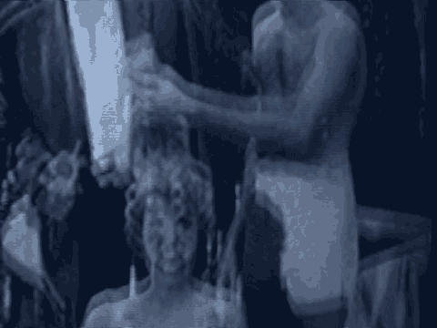

15
16
17
18
19
20
21
22
23
24
25
6767
1 (At the sidebar)
2 MR. BAUGH: The last witness had nothing to do with
3 victim impact and we would object to it and we could bring the
4 Tennessee issue, the nature and quantity of evidence.
5 MR. GARCIA: I think we'll be finished tomorrow.
6 MR. FITZGERALD: We're ahead of that.
7 MR. GARCIA: We've cut five witnesses from our group
8 and we'll be finish tomorrow.
9 MR. COHN: Your Honor, with respect I don't think --
10 THE COURT: One issue, one objection, made. Are you
11 going to do anything other than reinforce what Mr. Baugh has
12 said?
13 MR. COHN: No. I must say, your Honor, that this is
14 a rule that seems to appear from time to time.
15 THE COURT: The application is denied.
16 (Continued on next page)
17
18
19
20
21
22
23
24
25
6768
1 (In open court)
2 MR. FITZGERALD: Your Honor, I believe for
1